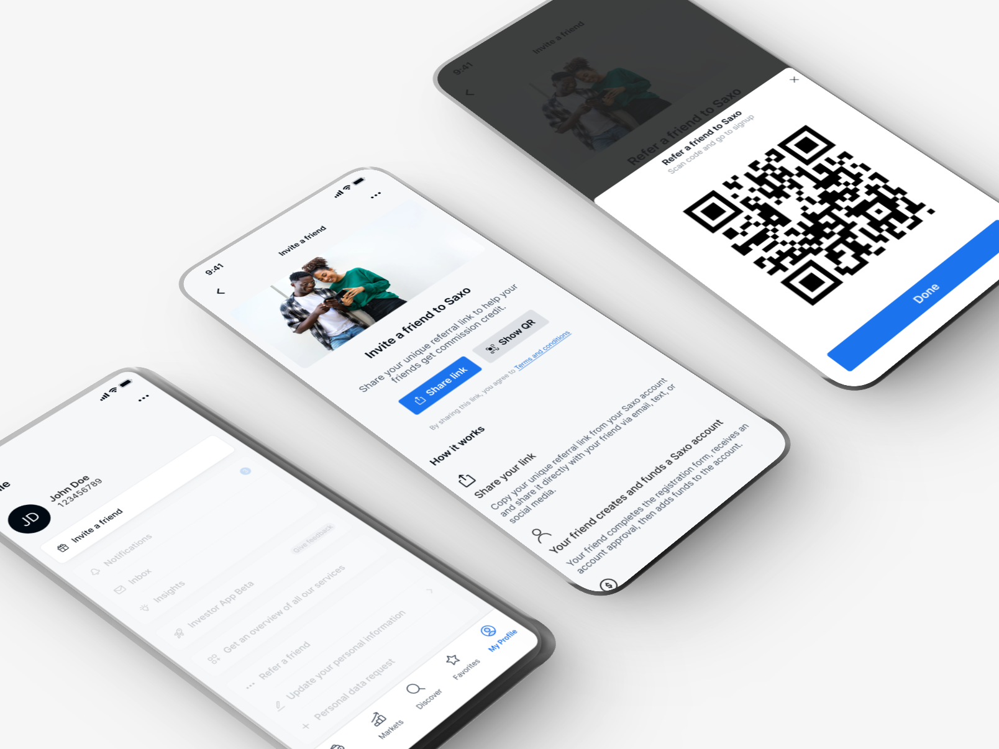
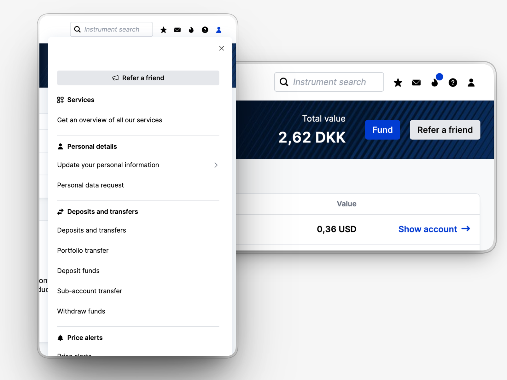
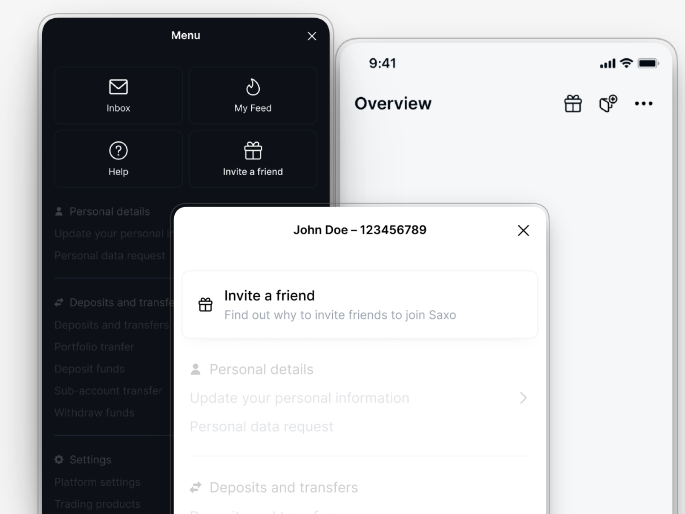
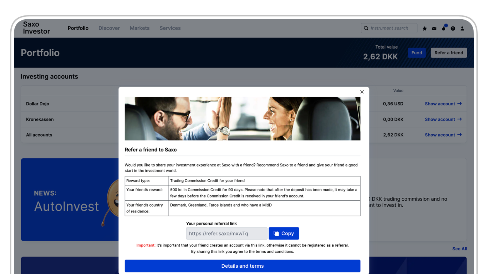
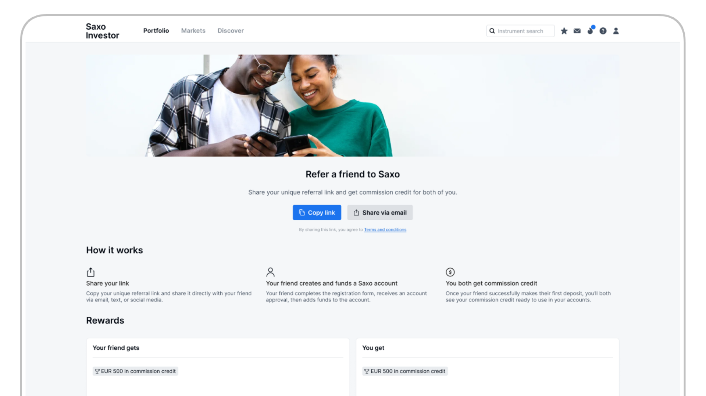
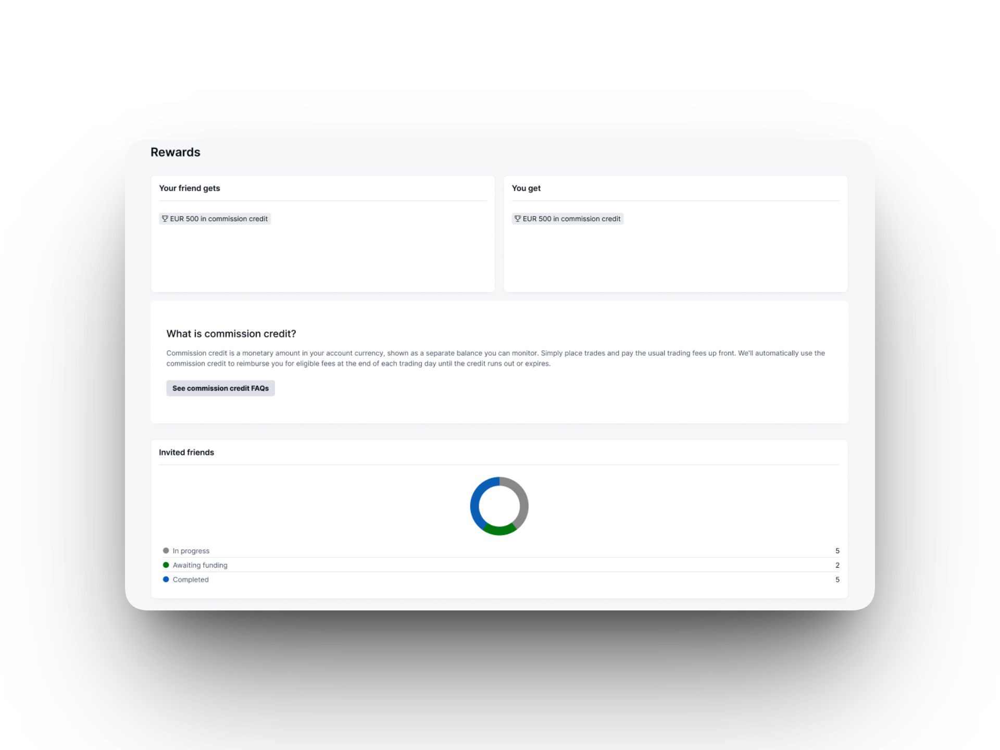
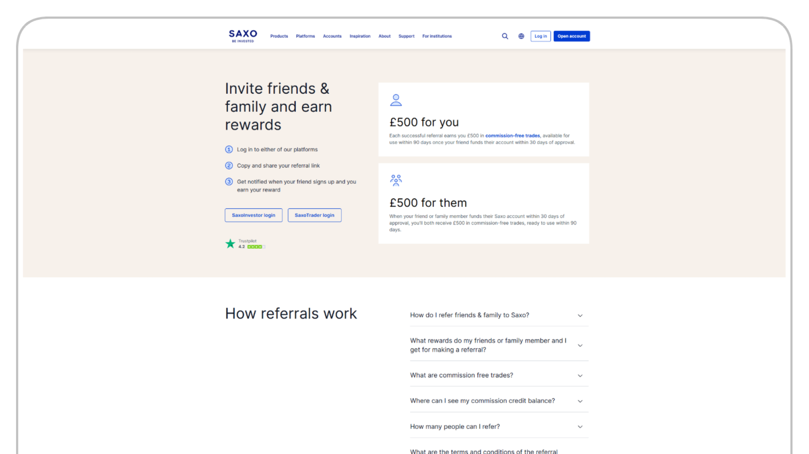
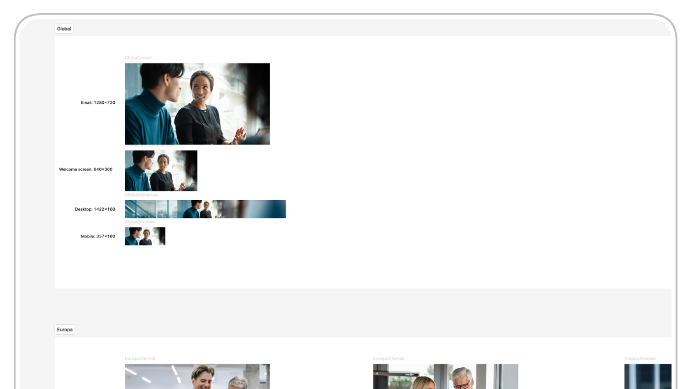

Low awareness in Asia
Of clients in the Asian markets measured had not encountered the programme.
Saxo Bank Refer a Friend
Redesigning a fragmented referral experience into a clearer journey across Saxo Bank’s platforms and public website, while building a structure that could work across 14 global markets.

Business opportunity
Increase referral participation and client acquisition by making the programme easier to find and the incentives easier to understand.
My contribution
Translate product insights into design decisions, test key journeys and lead UX/UI work across platform, web and market constraints.
Reported outcome
~3×Year-over-year referral growth reported by the product owner.
Programme-level result; other initiatives contributed.
01 / The challenge
Refer a Friend was a business priority at Saxo Bank — internally a “Must Win Battle”. But a programme can only contribute to acquisition if clients notice it, understand its value and feel confident sharing it.
Clients struggled to find the programme and make sense of its commission-credit rewards. Referrers also lacked clarity about what happened after sending an invitation. At the same time, the journey crossed platforms, teams and markets with different requirements.
The product challenge: create a referral experience that could support acquisition without overloading the interface or introducing 14 separate design solutions.
Of clients in the Asian markets measured had not encountered the programme.
Of clients in the European markets measured did not know it existed.
Clients could not clearly explain what commission credits were worth or how to use them.
Source: existing product and customer insights shared by the product owner. These figures describe the groups measured, not the entire global client base.
“I sent the link to a friend but I have no idea if he ever did anything with it.”
02 / Discovery & insight
The starting point was not a blank research plan. The product owner already had a substantial body of product analytics and customer insight. My job was to turn that evidence into a clear design direction and investigate where the experience broke down.
I worked from the existing product analytics and customer findings supplied by the product owner, including programme awareness, reward comprehension and evidence about where clients expected to find the feature.
Seven sessions involving referrers and referred users helped examine the existing and redesigned journeys, particularly whether incentives and next steps were clear to the people using them.
Make the programme discoverable at relevant, high-traffic touchpoints — without filling the product with promotions.
Explain both sides of the incentive and what commission credits mean in practical terms, before asking people to share.
Connect the referrer's platform experience with the invited friend's public-facing journey and make the next step clear.
The design question
That question kept the work focused on the underlying acquisition problem instead of treating “more visibility” as the solution by default.
03 / Design direction
The design had to serve three interests at once: business growth, client clarity and the realities of compliance and delivery.
Find Refer a Friend in a relevant part of the platform.
See the rewards, eligibility and what happens next.
Invite a friend and connect them to a credible web journey.
Help the referred client understand the steps to sign up and fund an account.
Rather than multiplying independent screens and entry points, I focused on a small set of improvements that would make the experience easier to understand from first discovery through to the invited friend's next step.
That meant working within Saxo's design system, coordinating with product and development, and accounting for different local reward and legal requirements from the outset.
04 / Design decisions
Each addressed a specific friction point — and each involved a trade-off between what was desirable, useful and feasible.
Decision 01 / Discoverability
I looked at the platform's most visited areas and proposed a focused set of entry points: a more recognizable referral icon, a presence on the portfolio page and access through the profile card.
Leadership initially wanted broader promotion. I challenged whether additional placements would add enough value to justify the extra interface clutter. We discussed the trade-off and agreed on the focused approach.


Decision 02 / Clarity
Commission credits are not immediately intuitive: they offset trading fees over time rather than behaving like a simple cash reward. Clients had questions about what they would actually receive, and what their friend would receive.
I moved the experience from a cramped dialog toward a dedicated page with more room for the incentive, clearer explanations and an obvious next step. The content separated the two sides of the reward and made commission credits easier to understand.



Decision 03 / End-to-end journey
The experience doesn't end when an existing client shares a link. The invited friend enters through Saxo's public website and needs to understand the offer and the next step without already knowing the platform.
I worked with the web design team, providing UX direction and a design foundation for the public-facing journey. Aligning language, incentives and next steps mattered even when different teams owned the screens.

Decision 04 / Global scale
Fourteen markets brought different reward rules, legal requirements and cultural expectations. A rigid, identical experience would not work everywhere; designing 14 unrelated versions would be difficult to maintain.
We used a shared design foundation while accommodating market-specific content and constraints. I also created culturally adapted assets and a composition guideline so future regional updates could remain consistent without being recreated from scratch.

05 / Validation & delivery
Testing helped evaluate the clarity of the experience. Delivery required that the proposed solutions also fit the design system, engineering capacity and market-level constraints.
Speak-aloud sessions with existing referrers and invited users were used across the existing and redesigned flows to examine comprehension, trust and the next step in the referral process.
The emphasis was on resolving observed confusion, not on treating the first concept as final.
My role grew from initial discovery/UX work into broader end-to-end design ownership. I coordinated with the product owner, analysts, engineering, compliance and the web design team as the experience took shape.
A referral-status / leaderboard concept explored the need for progress feedback, but it was parked following compliance review. It remained a design concept, not a released feature. The case study's business results should not be attributed to it.
06 / Results & impact
The product team reported positive business results following the redesign. The figures below represent programme performance, not the isolated effect of UX changes.
Attribution note: These are team-reported results across the referral programme. Marketing, other business activity and the design changes all contributed. The metrics may refer to different time windows, so they should not be read as a single controlled before-and-after experiment.
What we delivered
A dedicated referral journey with clearer reward communication.
More intentional platform entry points and an aligned web direction.
A reusable design foundation across 14 markets.
07 / Reflection
This project pushed me to think beyond individual screens. The business wanted growth, users needed clarity, and the solution had to work with limited development capacity and across different regulatory environments.
The most valuable decision wasn't a visual one: it was aligning the team around a focused referral journey rather than adding promotion everywhere. Equally important was knowing when a promising idea — such as referral status tracking — couldn't be shipped as planned.
What I'd improve next time: establish shared measurement definitions earlier for discovery, sharing, sign-up and funding. That would make it easier to separate the effects of design changes from campaigns and other acquisition activity.
This is a selected view of the project. I can walk through additional context, constraints and design decisions in a conversation.